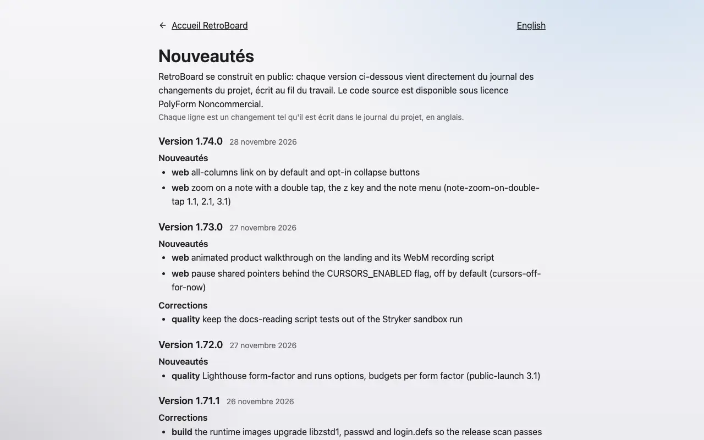
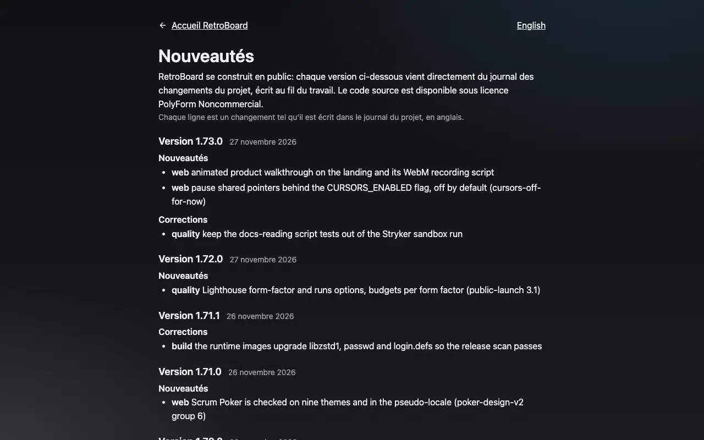

Les nouveautés
Une page publique liste les dernières versions, tirées du journal des changements du projet.
1 La page Nouveautés liste les dernières versions avec leur date et leurs changements.
La page est construite à partir du journal des changements du projet quand le site est construit: elle ne peut donc jamais lister un changement qui n’a pas été livré. Chaque version montre son numéro, sa date et ses changements regroupés en nouveautés, corrections, performance et sous le capot. Les lignes restent telles que le journal les a écrites, en anglais, dans les deux langues. La page est un fichier statique: elle ne collecte rien et ne charge rien depuis un autre site. Un lien en bas de la page d’accueil l’ouvre dans ta langue, et le dernier lien de la page mène à l’historique complet sur GitHub.

